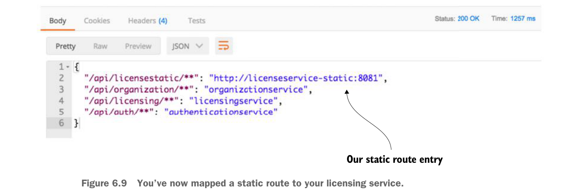

Giờ bạn đã ánh xạ một tuyến tĩnh tới dịch vụ licensing của mình.
Sau khi thay đổi cấu hình này được thực hiện, bạn có thể gọi endpoint /routes và thấy tuyến tĩnh được thêm vào Zuul. Hình 6.10 cho thấy kết quả từ danh sách /routes.
Ở thời điểm này, endpoint licensestatic sẽ không dùng Eureka mà thay vào đó sẽ định tuyến trực tiếp yêu cầu tới endpoint http://licenseservice-static:8081. Vấn đề là khi bỏ qua Eureka, bạn chỉ có một tuyến duy nhất để chuyển hướng yêu cầu. May mắn thay, bạn có thể cấu hình thủ công Zuul để tắt tích hợp Ribbon với Eureka, rồi liệt kê từng instance dịch vụ mà Ribbon sẽ dùng để cân bằng tải. Listing sau đây minh họa điều này.
Ánh xạ dịch vụ licensing tĩnh tới nhiều tuyến
zuul:
routes:
licensestatic:
path: /licensestatic/**
serviceId: licensestatic
ribbon:
eureka:
enabled: false
licensestatic:
ribbon:
listOfServers: http://licenseservice-static1:8081,
http://licenseservice-static2:8082Định nghĩa service ID sẽ được dùng để tra cứu dịch vụ trong Ribbon
Tắt hỗ trợ Eureka trong Ribbon
Danh sách máy chủ dùng để định tuyến yêu cầu tới